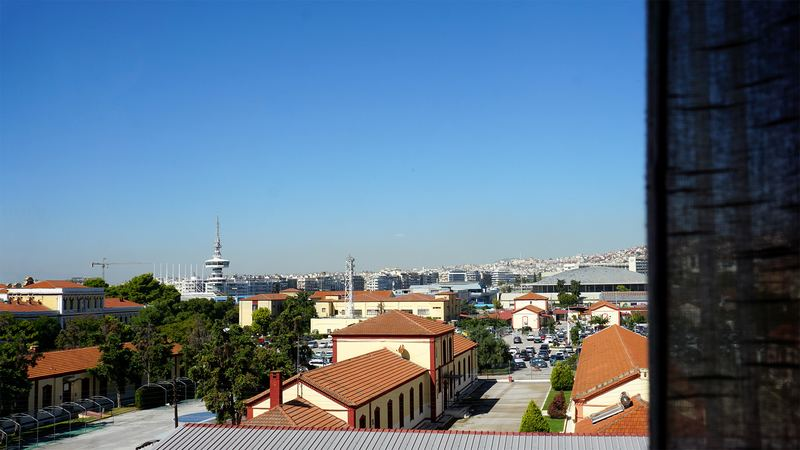

За жилището
до 6 души · 2 спални · 2 легла · 1 разтегателен диван · 1 баня · 60 м²
Светъл, изцяло ремонтиран апартамент от 60 м² с панорамна гледка към цял Солун, от Бялата кула до гората Сейх Су, и морето на хоризонта.
Обединени дневна и трапезария с дървен под, електрическа камина и голям телевизор. Диванът се разтяга в легло.
Две спални с телевизор и климатик: първата с двойно легло 160×200, бюро и излаз на балкона, втората с двойно легло 140×200.
Напълно оборудвана кухня с фурна, керамични котлони, хладилник, микровълнова, кафемашина Nespresso, кана за вода и тостер, плюс бар плот за закуска.
Модерна баня с душ тип „дъжд“, хавлии, халати и козметика.
Балконът с масичка и столове гледа към града: идеален за сутрешното кафе или чаша вино вечер.
Удобства
- Панорамна гледка към града
- Балкон
- Wi-Fi
- Климатик
- Отопление
- Електрическа камина
- Телевизор
- Напълно оборудвана кухня
- Кафемашина Nespresso
- Кафемашина за шварц кафе
- Фурна и микровълнова
- Пералня
- Душ тип „дъжд“
- Спално бельо
- Хавлии за баня и лице
- Халати за баня
- Шампоан и душ гел
- Четки и паста за зъби
- Чехли
- Почерпка за добре дошли: вино, бисквити и кафе
- Разтегателен диван
- Бюро
- Асансьор
- Домашни любимци при поискване
- Бебешка кошара безплатно
- Самостоятелно настаняване с кутия за ключове
Местоположение
Lysimachou Kaftantzoglou 32, 546 39 Thessaloniki